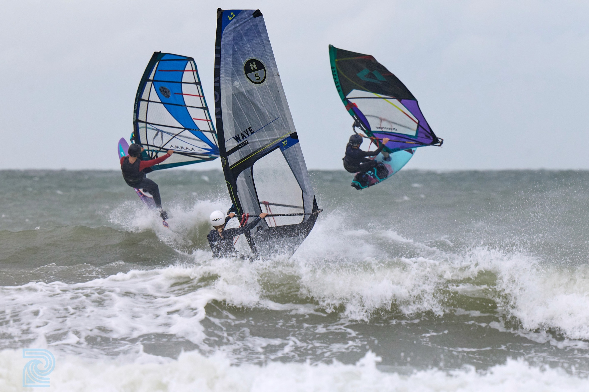
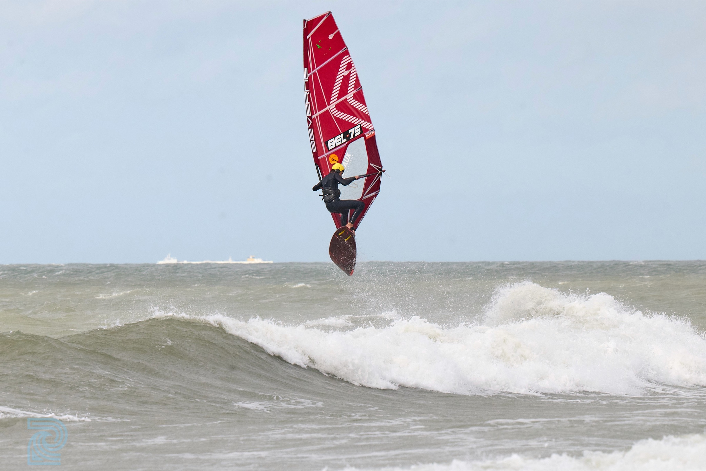

Comp
BK Wave Youth 2026
Op 19 september was het aan de up an coming generation om hun skills te tonen in competieverband. Er was een grote opkomst van zeer jonge deelnemers in Twinsclub te Bredene. 9 deelnemers in de U15, waarvan meerdere jonge gasten van minder als 13 jaar. 8 deelnemers in de U 17 en 6 in de U 21. Volgend jaar doen we een extra klasse U13. Dank aan Twinsclub Bredene voor de gastvrijheid , Patrick Kindt voor de foto's en Aubri Noyez voor de ondersteuning met Surflink.pro
- Datum
- 19 september 2026
- Locatie
- Twinsclub Bredene
- Deelnemers
- 9 U15 · 8 U17 · 6 U21
Verslag
Rainbow magic
Aangezien de wind pas in de namiddag zou draaien werd beslist om het BK Wave Youth te organiseren op Twins. S'ochtends stond er al een mooi swell en de wind trok geleidelijk aan. Om 15u10 ging de eerste heat van start in aflandige condities. 2 waveirides & 1 jump, heats van 10 min. Een moeilijke oefening voor de allerjongsten, een echte test in doorzettingsvermogen. Toen na heat n° 2 een regenboog tevoorschijn kwam wisten we nog niet dat deze ook goud zou brengen. De wind draaide side en trok aan tot 18 a 25 knopen. De 'Twins Rascals' konden eindelijke tonen wat ze in hun mars hadden en gingen voor mooie jumps in hun onderlinge heat, die we dan maar het clubkampioenschap hebben genoemd. In de finale U 15 stak Jeff François erboven uit. Selle Goeman toonde dat hij stevig kan waveriden maar kon z'n jumpmoves die hij over wind van rechts kan, nog niet herproduceren over wind van links. Lena koos enkele mooie golven er tussen uit en behaalde het brons overall en goud bij de vrouwen. In de U 17 waren het opnieuw Jeff en Selle die de eerste twee plaatsen , voor zich namen met een zeer mooie stalled forward van Jeff. Kamiel Desmet lag zeer dicht bij de tweede plaats maar moest uiteindelijk het hoofd buigen tegen Selle. Lena Pas en Marthe Desmet streden om de titel bij de vrouwen U 17. Marthe had de beste jump, maar Lena scoorde hoger dankzij haar waverides. Tijdens de halve finale van de U 21 viel de wind weg. Alexander had een tactisch plan en liep naar z'n tweede set gerief upwind, waardoor hij met meer power zich kon richten op jumps en de heat won. Jeff en Kamiel mochten mee naar de finale.
Er werd besloten om even te pauzeren door de wegvallende wind, maar geen minuut later kwam een regenbui over en trok de wind goed aan. Er werd besloten om per direct te varen. Alexander toonde z'n wavrideklasse en linkte de ene verticale turn met snelheid en spray aan de andere, ook Kamiel Demaesschalck sprong de mooiste stalled forward van het event maar had niet genoeg power in de golven om te tonen wat hij kon tijdens het waveriden.
Bij Jeff was na 7 heats het vat er af, logisch, hij perste er nog een forward uit maar kon niet in de voetbanden waterstarten. 1. Alexander 2. Kamiel 3. Jeff

Resultaten
Hall of fame
Eigenlijke alle jonge deelnemers toonden in moeilijke condities hun lef en klasse. De windsurftoekomst in België is verzekerd. De jury vond terecht dat het niveau van alle riders stevig was verbeterd tov vorig jaar. De sfeer van cameraderie waren top, iedereen die elkaar helpt en naar een hoger niveau pusht, merci deelnemers en juryleden.
BK Wave Youth 2026 U21
- 01Alexander Erfuhrt
- 02Kamiel Demaesschalck
- 03Jeff François
BK Wave Youth 2026 U17
- 01Jeff François
- 02Selle Goeman
- 03Kamiel Desmet
BK Wave Youth 2026 U15
- 01Jeff François
- 02Selle Goeman
- 03Lena PasBelgian champion women
BK Wave U17 Women
- 01Lena Pas
- 02Marthe Desmet